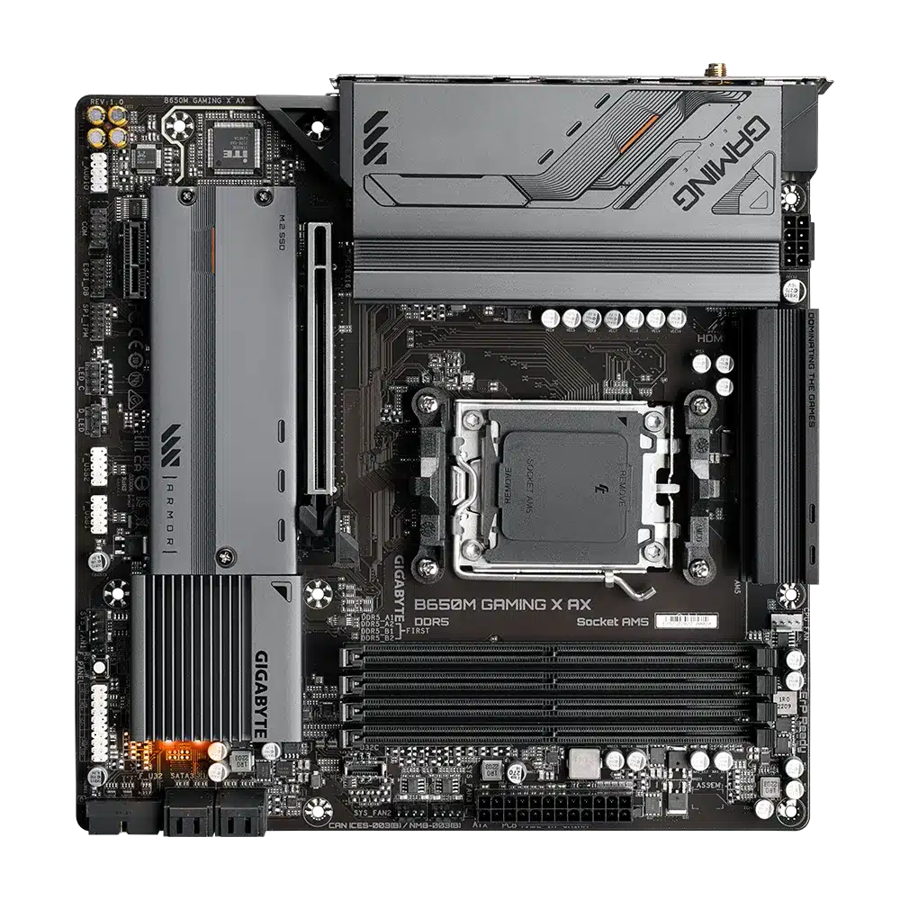
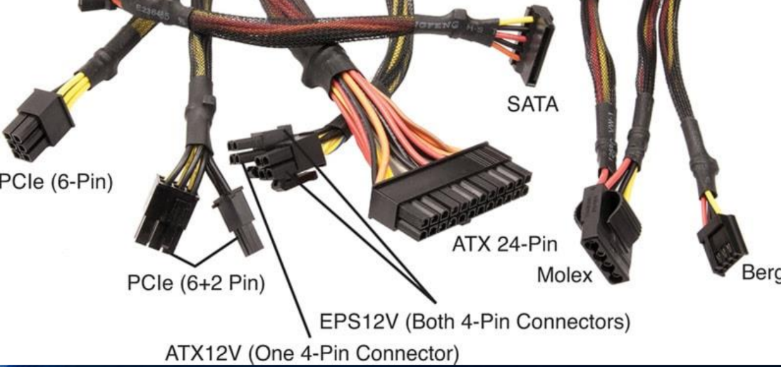
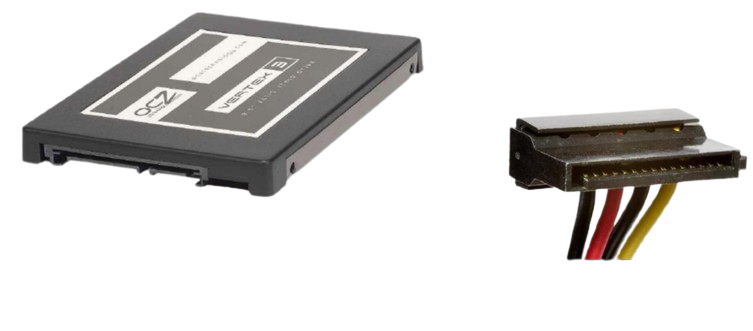
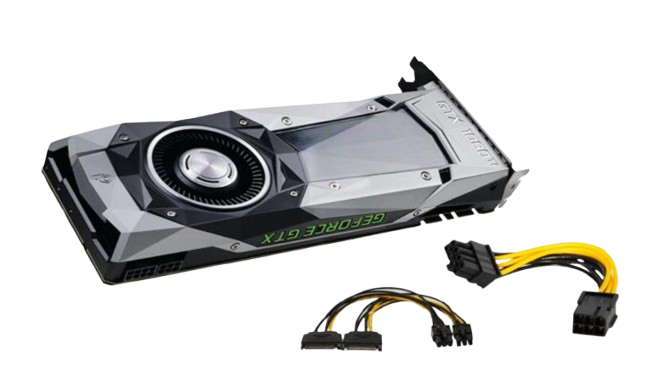
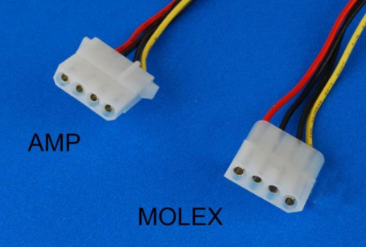
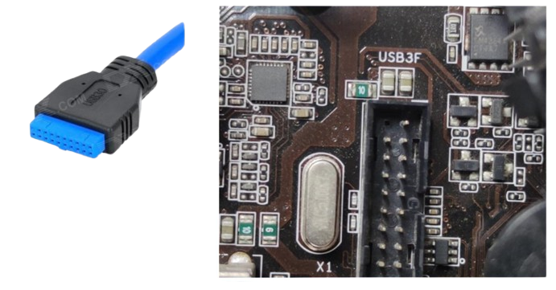
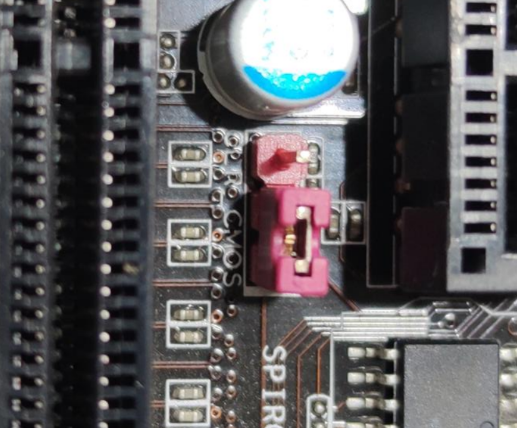

Lesson 2
ECS H110M1-C2H
H110M4-C2H supports Intel Core I7, Core I5, Core I3, Pentium Dual Core and Pentium Celeron Socket 1151 processors
CPU FAN

A computer fan is any fan inside, or attached to, a computer case used for active cooling. Fans are used to draw cooler air into the case from the outside, expel warm air from inside and move air across a heatsink to cool a particular component. Both axial and sometimes centrifugal (blower/squirrel-cage) fans are used in computers. Computer fans commonly come in standard sizes, such as 92 mm, 120 mm (most common), 140 mm, and even 200–220 mm. Computer fans are powered and controlled using 3-pin or 4-pin fan connectors.
POWER SUPPLY UNIT

A power supply unit (PSU) converts alternating current (AC) electricity from a wall outlet into direct current (DC) electricity for a computer's internal components. It provides the power needed to run the computer's motherboard, CPU, GPU, drives, and other peripherals.
12V CONNECTOR

A 12V connector is a type of electrical connector that delivers 12 volts of power to a device. 12V connectors can be used in computers, fans, and trailers.
PSU CONNECTOR
The connectors on a power supply unit (PSU) provide power to the computer's internal components. The main connector is the ATX 24-pin connector, which supplies power to the motherboard. Other connectors include the 4-pin Molex connector for hard drives and the SATA connector for SATA drives.
24 PINStitle

The 24-pin connector, also known as the ATX 24-pin connector, supplies power to a computer's motherboard. It connects the power supply unit (PSU) to the motherboard, distributing power to all of the motherboard's components.
SATA POWER CONNECTOR
A SATA power connector supplies electrical power to storage devices like hard disk drives (HDDs) and solid-state drives (SSDs). SATA stands for Serial Advanced Technology Attachment.
SATA DATA CONNECTOR

A SATA (Serial Advanced Technology Attachment) connector allows storage devices to communicate with a computer's motherboard. SATA connectors transmit data and power between the storage device and the computer
8PIN/6PIN CONNECTOR
6-pin and 8-pin connectors are power connectors that provide power to graphics cards and CPUs. The 8-pin connector can provide more power and support more powerful components.
MOLEX
Certain Molex connectors are used for providing power to the motherboard, fans, floppy disk drive, CD/DVD drive, video card, some older hard drive models, and more
FRONT PANEL

The front panel of a computer is the part that the user interacts with, while the back panel is the part where you connect external devices
USB 3 FRONT PANEL
A USB 3 front panel is a connection port on a computer case that allows you to connect USB 3 devices to your computer's motherboard
AUDIO FRONT PANEL

allow you to connect the power button, reset button, LED indicators, USB ports, and audio jacks on your case to the motherboard.
USB

A set of USB ports on the front of a computer case that connect to the computer's motherboard.
FRONT PANEL CONNECTOR

Front panel connectors connect the motherboard to your CPU case.
CMOS RESET
Resetting the BIOS or CMOS settings can clear any corrupted or incorrect configuration that may cause boot errors, compatibility problems, or instability.